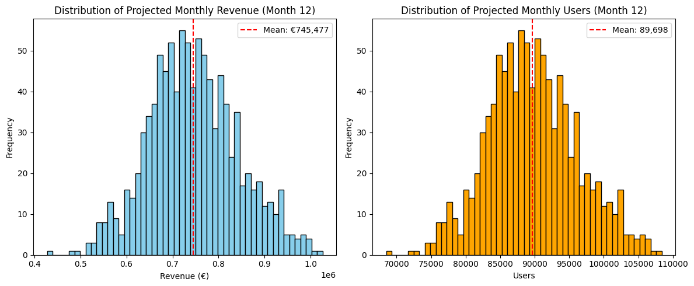

Beyond the Cases: How I Upgraded Our Financial Forecasts with Stochastic Modeling

This project pertains to a freelance project that I undertook for a client in the medical SAAS business. For years, the finance team relied on static spreadsheet models to forecast key SaaS metrics. While these models provided a baseline, they offered little insight into the range of possible outcomes and the probability of success. Recognizing this limitation, I embarked on a project to transition from deterministic forecasting to stochastic modeling. This article charts the journey from static scenarios to robust, probability based risk analysis using the Monte Carlo Simulation.
When Static Scenarios Stifle
The traditional model involved defining distinct Base, Bull, and Bear cases for key drivers like growth and churn. While this felt structured, it suffered from critical flaws. Each scenario assumed static values for its drivers, neglecting the inherent fluctuations and dependencies in SaaS. The method used three distinct paths for forecasting, but there was no way to estimate how likely each was. Extremely rare, low probability outcomes that could make or break the company were often lost and unaccounted for.
These limitations made it difficult to provide leadership with confident answers. Questions like "How certain are we to hit our targets?" were impossible to answer.We needed a more sophisticated approach.
I recreated the model in Google sheets incase you want to learn more. However i used synthetic data for confidentiality reasons. You can view it here.
Embracing Uncertainty with Python
We decided to leverage Python to build a stochastic model using Monte Carlo simulation. This technique allows us to replace fixed point inputs with probability distributions.
Methodology
Defining Probability Distributions
Instead of choosing one "Bear" churn rate, I defined a standard distribution with a mean and standard deviation (eg Mean: 4%, StdDev: 1%).
The Simulation Engine
The Python script ran thousands of iterations of the model. In each iteration, the engine would randomly select a value from the probability distribution for each variable, pathing out a unique monthly forecast.
What the distributions told us
By aggregating the results of all these simulated futures, I transformed abstract risk into a concrete, visual distribution. The distributions generated by our model provided an entirely new lens through which to view the company’s user base and earnings. The following are some of the finding from the Monte Carlo simulation that were never possible using spreadsheet models.
- The Mean of €745,477 became the probabilistic Base Case, meaning the expected outcome across all scenarios.
- The spread from ~€450k to over €1M demonstrates the extreme sensitivity to even small fluctuations in key drivers, highlighting the critical nature of precise forecasting and good planning.
- The tails of the distributions showed possibilities of revenue and users falling way below expectation. This quantified risk became a key input for the cash reserve strategy.
- This distribution allowed IT teams to ensure infrastructure can handle up to 105k users. While it was unlikely, it's a measurable probability we needed to plan for."
Actionable Insights
After reviewing the results of the project, I tasked myself to translate the statistical output into pragmatic strategies for the leadership. These are some oif the ways the new model helped the business.
- Quantifiable Confidence: We moved from guesses to saying with statistical certainty: "We can be 95% confident that Year-End revenue will land between €550k and €950k.
- Risk Mitigation: The model helped us identify that a 2% increase in monthly churn (our severe "Stress Case") would trigger an immediate 5 month reduction in our cash runway. This quantified threshold allowed the creation of a mitigating plan.
- Sensitivity Alignment: Our analysis demonstrated that improving Cost of Aqcuiring a Customer (CAC) efficiency had a 3x higher impact on long term valuation than raw user growth. This has shifted our strategic focus toward higher value customer segments (e.g., clinicians) over purely high-volume acquisition (e.g., students)
Conclusion
By upgrading our forecasting toolkit from basic spreadsheets to advanced stochastic modeling, we moved beyond simple goal setting to robust, data backed strategic planning. This ensures the company remained agile, profitable, and prepared for whatever future unfolds.